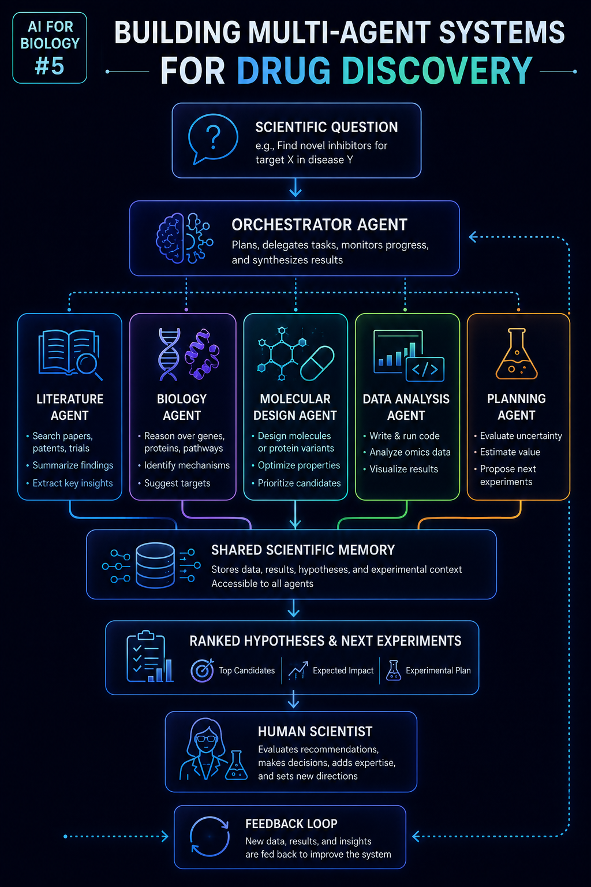

Building a Multi-Agent System for Drug Discovery: Six Months of Lessons
A retrospective on a multi-agent drug-discovery system: what worked, what didn't, why the orchestrator is most of the engineering work, and why autonomous-agent-scientist is a worse idea than it sounds.